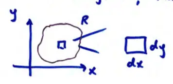
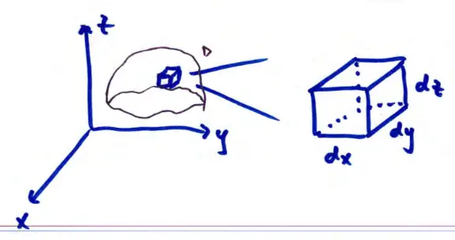

16.4 Triple Integrals
\(\iint_R f(x,y) dA\) is the accumulation of \(f(x,y)\) over the region \(R\).
If \(f(x,y) = 1\), then \(\iint_R dA\) is the area of \(R\).

\[dA = dx dy = dy dx\]
Two possible orders
\(\iiint_D f(x,y,z) dV\) is the accumulation of \(f(x,y,z)\) over the volume \(D\).
If \(f(x,y,z) = 1\), then \(\iiint_D dV\) is the volume of \(D\).

\[dV = dx dy dz\]\[= dx dz dy\]\[= dy dx dz\]\[= dy dz dx\]\[= dz dx dy\]\[= dz dy dx\]
Six possible orders